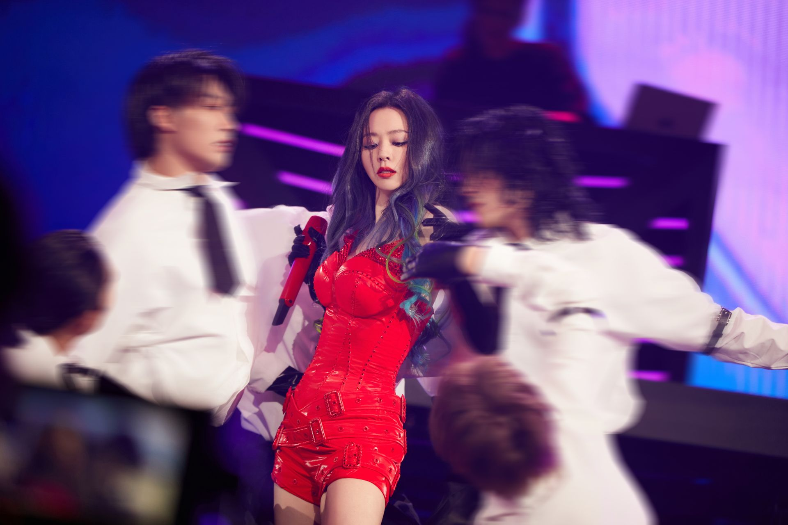

聚焦张靓颖近期舞台、作品与荣誉
基本信息与音乐关键词
从成都酒吧驻唱到站上世界舞台的二十一年
7 张录音室专辑 · 6 张迷你专辑与现场辑 · 2 张影视金曲精选
被称作“OST 女王”的她，为众多影视作品留下传唱金曲
首位亮相格莱美的华人歌手，多首英文单曲登上美国榜单
从 2008 年首次巡演到「追」世界巡回
九届华人歌曲音乐盛典最佳女歌手 · 六届东方风云榜最佳女歌手
参演影视 / 音乐剧与常驻综艺节目
点击卡片查看舞台记忆
※ 图片仅作粉丝展示用途，版权归原权利人所有；点击卡片可查看大图。
在以下平台收听她的音乐与最新消息